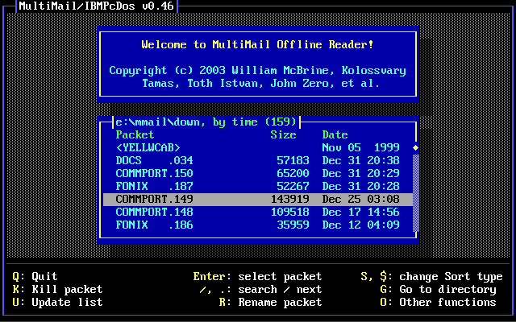
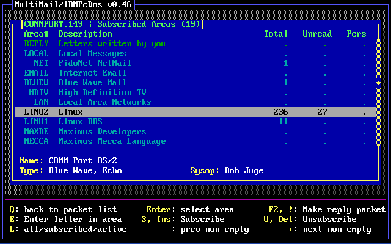
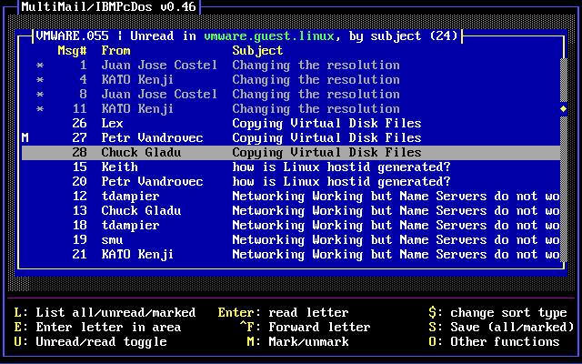
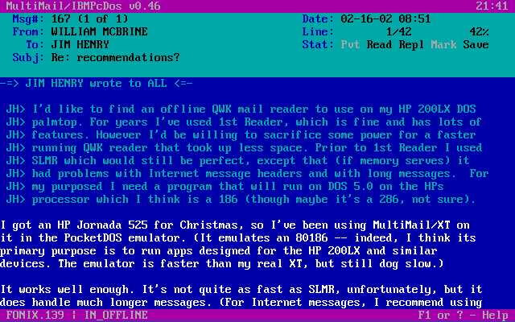
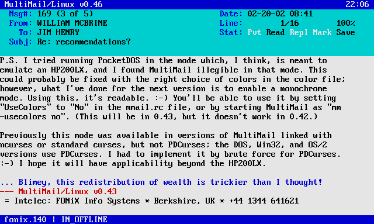
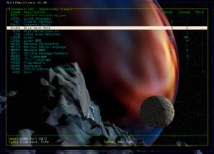
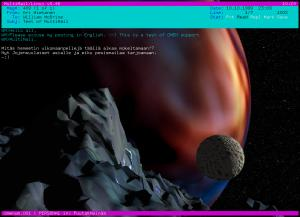

MultiMail Screen Shots
Default color scheme, MS-DOS version
From DOSEmu in X.

Startup screen -- packet list

With a filter, in expert mode

Area list, Blue Wave

Area list, QWK

Letter list, BBS

Letter list, Usenet

Letter window

ANSI viewer
Aqua color scheme, Linux version, in xterm
An example of a light-background scheme. This xterm was started with "-fn vga -tn linux" -- useful for viewing ANSI pics.

Startup screen -- expert mode

Letter window
With transparency, in Eterm
New in 0.39 -- whichever color is defined as the background in "Main_Back" becomes transparent. (Version 0.38 always made Black the transparent color.) This can be used to good effect with a light-background scheme like aqua.col. Here I'm using the standard iso-8859-1 character set, 10x20 font. (Click for full-size versions.)

Startup screen -- expert mode (186k) |

Letter window (73k) |
The standard color scheme, but with the background set to blue and made transparent. (Click for full-size versions.)
|

Area list -- expert mode (214k) |

Letter window (194k) |
{kind=link}
{kind=link}
Not all terminals are created equal
The pictures at the top of this page show what MultiMail is supposed to look like, but some terminals lack support for color, the special box-drawing characters, or both. In many cases, this isn't really the fault of the terminal, but of the corresponding entry in the terminfo database -- you can sometimes edit that to fix the problem. In other cases, changing the font can help. Anyway, the "lowest common denominator" MultiMail display looks something like this (contributed by Alan Zisman -- click for full-size version):
MultiMail running under Macintosh OS X, aka Darwin (143k)
{kind=link}
I'm happy to report that performance under Mac OS X's Terminal has improved since that snapshot was taken; colors and box-drawing characters now work. (The background is still made up of octothorpes, but that's the same as in xterm without the "-fn vga -tn linux". I should probably work on that.)
{kind=link}